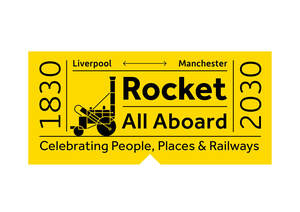

Trade Mark Journal No.2025/028 11 July 2025
UK00004169011 5 March 2025 (9,14,16,18,20,21,24,25,28,30,32,33,35,39,43)

- Class 9
- Downloadable multimedia, audio, visual and audio-visual content; recorded multimedia, audio, visual and audio-visual content; animated cartoons and films; video films and programmes; podcasts; videocasts; DVDs; CDs; interactive and multimedia software and software applications; computer games; game applications for mobile devices and computers; downloadable electronic publications; downloadable music and ring tones; computer mouses; mouse mats; holders, cases, covers, straps, chargers, ring holders, stands, lanyards, carriers, selfie sticks, earphones, headphones, speakers, cable adaptors and protective films for mobile phones; headsets; virtual reality controllers; downloadable mobile coupons; training apparatus and simulators for vehicles; simulators for the steering and control of vehicles; scientific apparatus; decorative magnets; spectacles and sunglasses; cases, chains, cords and straps for glasses and sunglasses.
- Class 14
- Precious metals and their alloys; precious and semi-precious stones; coins; copper tokens; commemorative cups; ornaments of precious metals or their alloys; ornaments of precious and semi-precious stones; nameplates of precious metals or their alloys; jewellery; jewellery for dogs; prayer beads; imitation jewellery; jewellery charms; jewellery boxes; brooches; badges of precious metal; cuff links, tie pins, tie clips; key rings, key chains, lanyards for keys, and charms therefor; watch chains; horological and chronometric instruments and parts and fittings thereof.
- Class 16
- Printed matter; Printed advertising material; books; activity books; colouring books; comic books; newspapers; magazines; printed publications; booklets; periodicals; posters; graphic prints; photographs; greetings cards; postcards; wrapping paper; stationery; writing implements; tablemats and coasters of paper; stamps [seals]; office requisites; calendars; diaries; tissues and napkins of paper; paper and paper goods; flags of paper; arts and crafts kits; embroidery designs; drawing materials; artist materials; modelling materials; printing blocks; wrapping and packaging materials; disposable paper products such as handkerchiefs and table linen of paper; drawer liners, perfumed or not; paper decorations; paper badges; floor and wall decals; cases, covers and devices for holding or securing paper including paperclips, money clips; passport holders; scrapbooks; trading cards, other than for games; bank notes; postage stamps.
- Class 18
- Handbags, purses, cases; bags; toilet and vanity bags [not fitted]; luggage and carrying bags; wallets; business card cases; drawstring bags and other carriers; umbrellas and parasols; boxes and cases of leather and leatherboard; key cases; labels of leather; collars, leashes and clothing for animals; clothing for pets.
- Class 20
- Mirrors; picture frames; embroidery frames; containers, not of metal, for storage or transport; boxes of wood, mother of pearl or plastic; chests for toys; registration and name plates not of metal; bedding, except linen; beds for pets; figurines and statuettes of wood, wax, plaster or plastic; cushions; door stops, not of metal or rubber; nest boxes; decorations of plastic for foodstuffs.
- Class 21
- Household or kitchen utensils and containers; cookware and tableware; paper plates; lunchboxes; chinaware; tablemats and coasters [not of paper or card] for tableware; tray for household purposes; glass figurines and boxes; china ornaments; glassware; mugs; porcelain ware; earthenware; pottery; feeding bowls for pets; flasks; hip-flasks; cups and plates of paper or plastic; vases; bottles; bottle openers; piggy banks; pails; cocktail shakers; ice buckets; reusable ice cubes; wine, cocktail and liqueur sets; combs and sponges; brushes; candlesticks; candle jars [holders]; figurines of porcelain, ceramic, earthenware, terra-cotta or glass; flower pots; prize cups of porcelain, ceramic, earthenware, terra-cotta or glass.
- Class 24
- Textiles and textile goods; household linen; table linen; tablemats and coasters of textile; towels; face towels of textile; curtains; soft furnishings; bed linen; bed covers, bedspreads, blankets, coverlets and quilts; sleeping bags; flags and bunting of textile; handkerchiefs of textile; picnic blankets; wall hangings of textile/tapestry.
- Class 25
- Clothing, footwear, headwear; socks; footmuffs; t-shirts; jumpers; sweaters; pyjamas; pocket squares; aprons; fancy dress costumes.
- Class 28
- Toys, games and playthings; novelty toys; trading card games; toy models; toy vehicles; building games; play tents; plush toys; sporting articles; action figures; playing cards; puzzles; scale model kits [toys]; scale model vehicles; festive decorations, party novelties; balloons; kites; video games; portable games with liquid crystal displays; portable games and toys incorporating telecommunication functions; kaleidoscopes; piñatas; Christmas crackers; Snow globes; decorations for Christmas trees.
- Class 30
- Coffee, tea, cocoa and substitutes therefor; bread, pastries and confectionery; chocolate; ice cream, sorbets and other edible ices; honey; salt, seasonings, spices, preserved herbs; vinegar, sauces and other condiments; savoury snacks; sandwiches; cakes and biscuits; puddings.
- Class 32
- Beers; non-alcoholic beverages; mineral and aerated waters; fruit beverages and fruit juices; syrups and other preparations for making non-alcoholic beverages.
- Class 33
- Alcoholic beverages (except beers); Alcoholic preparations for making beverages; wines; distilled spirits; liqueurs; cocktails.
- Class 35
- Retail services, retail store services, mail order retail services and electronic or on-line retail services connected with the sale of downloadable content, CDs, DVDs, multimedia content, films, programmes, software and software applications, games, computer accessories, mobile phone accessories, scientific apparatus, science kits, electronic devices, eyewear, jewellery, watches, clocks, printed matter, books, stationery, craft kits, party supplies, cards, artist materials, bags, wallets, purses, leather goods, umbrellas, parasols, furniture, furnishings, decorations, décor, gifts, figurines, statuettes, bedding, bed linen, homewares, household utensils, cookware and tableware, glassware, mugs, crockery, household textiles, clothing, footwear, headwear, fashion accessories, toys, games, playthings, food and drinks; advertising, marketing and promotional services; writing and publication of publicity texts; arranging and organisation of trade fairs and exhibitions for commercial or advertising purposes; information, advice and consultancy in relation to the aforementioned services.
- Class 39
- Transport services; travel and transport arrangements services; vehicle rental services; transport information, advice and reservation services; transport services for sightseeing tours; arranging of transportation for travel tours; planning and arranging of excursions, day trips and sightseeing tours; information, advice and consultancy in relation to the aforementioned services.
- Class 43
- Services for providing food and drink; self service restaurants; café, cafeteria, canteen, restaurant, snack bar, bar, wine bar service; temporary accommodation; information, advice and consultancy in relation to the aforementioned services.
Manchester Histories Limited